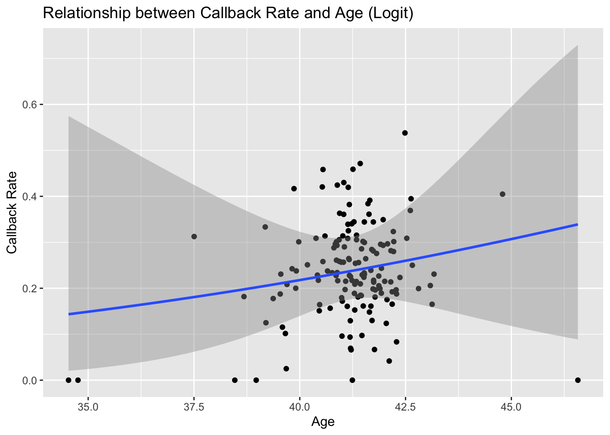
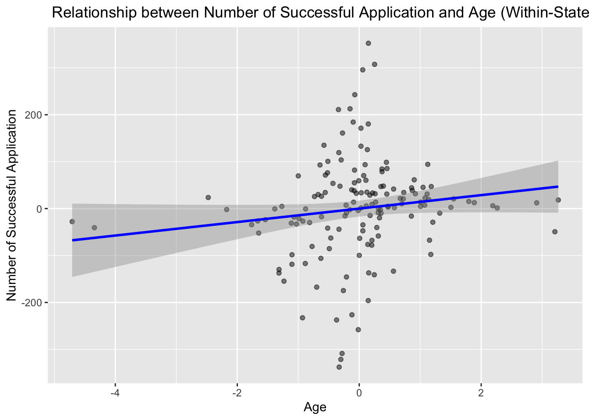

Note: Experiment data is from 2019-2021, while census data is from 2019-2024. The following code aggregate application level data to the state level and merge it with the census data to calculate the proportion of applications by state.
This exercise will help us understand the background of the data on a state-by-state basis and explore the relationship between callback rates and other variables at the state level.
# for census_data_2 only keep year column 13 and row 6 onwardscensus_data_2 <- census_data_2 %>%select(1, 13) %>%slice(6:56) # rename first column to states colnames(census_data_2)[1] <-"states"# delete . in front of state namescensus_data_2 <- census_data_2 %>%filter(grepl("^\\.", states)) %>%mutate(states =gsub("^\\.", "", states))
Data Background and Context
The dataset originates from the landmark study “Systemic Discrimination Among Large U.S. Employers” (Kline, Rose, and Walters, 2022).
Research Questions: The study explores whether discrimination is endemic to particular firms, investigates firm-level heterogeneity in callback rates, and considers the potential impact of industry, geographic location, and other structural factors.
The census data was retrieved from the United States Census Bureau at this link: https://www.census.gov/data/tables/time-series/demo/popest/2020s-state-total.html
Aggregating Application Data to State Level
To begin our analysis, we aggregate individual-level application data into state-level summaries. In this section, we create new variables such as the full name (and its length) and calculate the proportion of applicants with black-sounding names. These measures help us capture nuances in the data that might be related to potential discriminatory practices.
The next step involves cleaning the census data. This dataset provides annual state population counts, which we reshape into a longitudinal (panel) format to facilitate merging with the state-level application data. The cleaning process includes renaming columns, removing extraneous rows, and filtering to include only the relevant states.
While the linear model is a simplification, it serves as a starting point for our further investigation using fixed effects.
Findings:
Positive coefficient (β = 15.967, p = 0.093)
Suggests 1-year age increase → ~16 more callbacks
Marginally significant relationship (p < 0.1)
Visualizing the Relationship between Callback Rate and Age (Logit)
To complement our regression analysis, we visualize the relationship between age and callback rate using a scatter plot with a fitted smooth curve. This plot helps to highlight any nonlinearities or trends that may not be apparent from the regression output alone.
merged_data %>%ggplot(aes(x = age, y = callback_rate)) +geom_point() +geom_smooth(method ="glm", method.args =list(family =binomial(link ="logit")), se =TRUE) +labs(title ="Relationship between Callback Rate and Age (Logit)",y ="Callback Rate",x ="Age" )
`geom_smooth()` using formula = 'y ~ x'

Fixed Effect: Effect of Age on Success within States
The first fixed effects model controls for state-specific characteristics. Here, we decompose age and success into their within-state (demeaned) components, allowing us to examine the relationship between these variables within each state.
merged_data <- merged_data %>%mutate(success = callback_rate * num_sub)# here we convert the callback rate to the number of callbacks for the fixed effects linear model# within-state variationsmod_2 <-feols(success ~ age | state, data = merged_data)summary(mod_2) # positive significant effect of age on success (but this is for all age groups)
Within the same state: 1-year age increase → ~14.3 more callbacks for all age groups on average.
Visualizing the relationship between callback rate and age under fixed effect
We then visualize this within-state relationship by plotting the demeaned variables.
# demean age: mod_age <-feols(age ~1| state, data = merged_data)merged_data <- merged_data %>%mutate(age_demeaned =resid(mod_age))# demean success:mod_rate <-feols(success ~1| state, data = merged_data)merged_data <- merged_data %>%mutate(success_demeaned =resid(mod_rate))ggplot(merged_data, aes(x = age_demeaned, y = success_demeaned)) +geom_point(alpha =0.5) +geom_smooth(method ="lm", color ="blue") +labs(title =" Relationship between Number of Successful Application and Age (Within-State)",x ="Age",y ="Number of Successful Application" )
`geom_smooth()` using formula = 'y ~ x'

======= # Between Fixed Effect: Effect of Age on Success between States
Finally, we assess the effect of age on success between states while controlling for year-specific effects. This model examines whether differences in average age across states are associated with variations in callback success at a broader level.
mod_3 <-feols(success ~ age |year, data = merged_data)summary(mod_3) # no significant effect of age on success